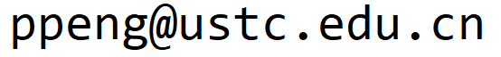

Pan Peng (彭攀)
I am a faculty member (特任教授) in the
School of Computer Science and Technology
of University of Science and Technology of China (USTC).
I was a long-term participant at UC Berkeley's Simons Institute program in Sublinear Algorithms . I was a lecturer (assistant professor) in the Department of Computer Science at University of Sheffield, UK. Before that, I held postdoc positions at TU Dortmund (Prof. Christian Sohler ) and University of Vienna (Prof. Monika Henzinger ). I got my Ph.D under supervision of Prof. Angsheng Li at the Institute of Software, Chinese Academy of Sciences in 2013. I received my bachelor degree in Mathematics from Beijing Normal University in 2007. |
|
My research interests lie at the intersection of theoretical computer science, network science, and data science.
Currently, I am focused on sublinear algorithms, graph algorithms, and the privacy and robustness of algorithms.
Program Committees
Publications
Teaching
Graph Theory (Honor Class). 2025 Fall.
Algorithms for Big Data. 2022, 2023, 2025 Spring.
Design and Analysis of Algorithms. 2022–2024 Fall.
Advanced Algorithms. 2018–2021.
Automata, Computation and Complexity. 2018–2021.
Algorithms for Big Data. 2022, 2023, 2025 Spring.
Design and Analysis of Algorithms. 2022–2024 Fall.
Advanced Algorithms. 2018–2021.
Automata, Computation and Complexity. 2018–2021.
Contact Information
Pan Peng
School of Computer Science and Technology
University of Science and Technology of China
School of Computer Science and Technology
University of Science and Technology of China
